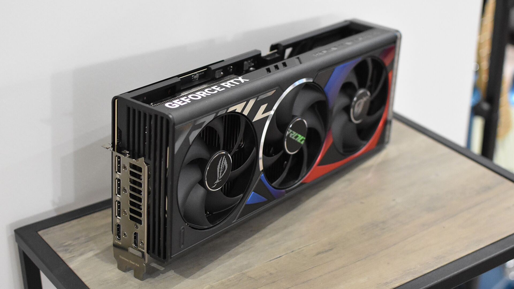

NVIDIA® GeForce RTX™ 4080 ofrece el ultra rendimiento y las funciones que demandan los jugadores y creadores entusiastas. Haz que tus juegos y proyectos creativos cobren vida con el ray tracing y los gráficos basados en IA. Está impulsada por la arquitectura ultra eficiente NVIDIA Ada Lovelace y 16 GB de memoria G6X superrápida.

Especificaciones
El multiplicador de rendimiento, impulsado por IA.